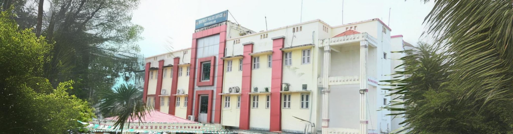
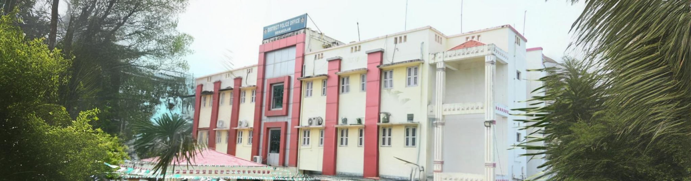
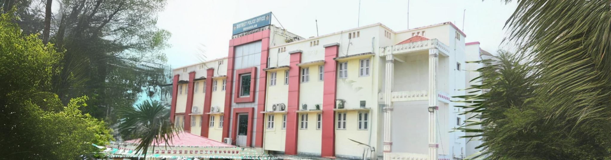

Srikakulam Police Department
RECENT ACTIVITY.
Home
About Us
Mission
Vision
History
Services
Patrolling
Community Programs
Emergency Response
Contact Us

Tweets by POLICESRIKAKULM
Srikakulam Police Department
Srikakulam Police Department


 
